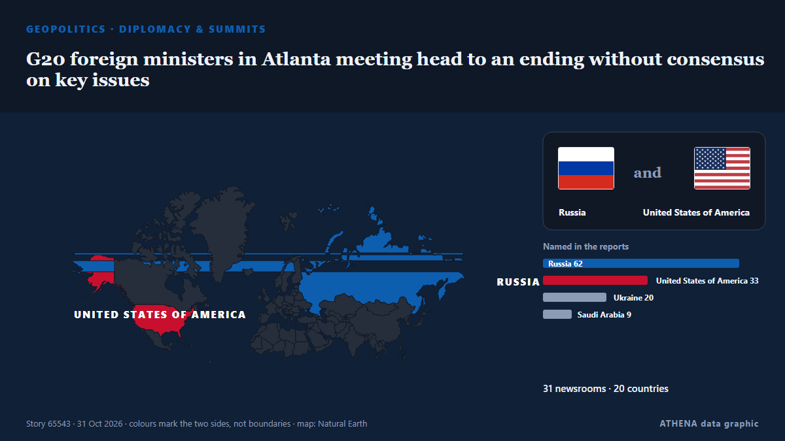

G20 foreign ministers in Atlanta meeting head to an ending without consensus on key issues

RIYADH: Saudi Foreign Minister Prince Faisal bin Farhan took part in the G20 foreign ministers meeting in Atlanta, US, on Friday, the foreign ministry reported. من Arab News
نشرته بشكل مستقل 32 مصدرًا في 21 دولة منذ 30 أكتوبر، وأول من نشره Anadolu Agency (English)؛ والتغطية لا تزال تتسع. يقدّر ATHENA الخطر بأنه متزايد (4.7/10)، ويعود ذلك أساسًا إلى خطورة الضرر الموصوف ونطاقه الجغرافي والقطاعي. الثقة 92٪ (مرتفعة)، وعدد المصادر المستقلة المؤكِّدة: 32، بمتوسط موثوقية للمصادر يبلغ 76٪. وسائل الإعلام حسب البلد: تركيا (4), سنغافورة (4), روسيا (3). التغطية: من 30 أكتوبر إلى 31 أكتوبر، 19 ساعة.
لماذا يهم: قد تغيّر التطورات الأمنية والدبلوماسية التحالفات والتجارة والأسواق إلى ما هو أبعد بكثير من الدول المعنية مباشرة.
ما الذي تغيّر: 29 تقارير جديدة من 23 غرف أخبار خلال 24 ساعة حتى 31 أكتوبر.
العنوان الأول: China backs South Africa to attend G20 meetings as US set to host top diplomats
تُعرض العناوين بالإنجليزية كما نُشرت.
نظرة سريعة
اختير وقُيِّم وكُتب وفق منهجية ATHENA المنشورة. لا يتدخل أي محرر في الأحداث بعينها. كيف يُنتَج ›
| 30 Oct 09:24 UTC | 6 |
|---|---|
| 30 Oct 11:24 UTC | 2 |
| 30 Oct 13:24 UTC | 3 |
| 30 Oct 15:24 UTC | 5 |
| 30 Oct 17:24 UTC | 6 |
| 30 Oct 19:24 UTC | 4 |
| 30 Oct 21:24 UTC | 6 |
| 30 Oct 23:24 UTC | 4 |
| 31 Oct 01:24 UTC | 2 |
| 31 Oct 03:24 UTC | 2 |
| 31 Oct 05:24 UTC | 1 |
| 31 Oct 07:24 UTC | 0 |
| 31 Oct 09:24 UTC | 1 |
| 31 Oct 11:24 UTC | 0 |
| 31 Oct 13:24 UTC | 3 |
| 31 Oct 15:24 UTC | 1 |
| 31 Oct 17:24 UTC | 1 |
| 30 Oct 09:36 UTC | 0.0 |
|---|---|
| 30 Oct 18:48 UTC | 1.3 |
| 30 Oct 20:12 UTC | 2.3 |
| 30 Oct 20:49 UTC | 5.0 |
| 31 Oct 17:59 UTC | 4.7 |
لماذا هذه الأرقام
الأهمية
الخطر
الثقة
التغطية — من نشر الخبر ومتى
العنوان كما نُشر · يفتح الأصل- Anadolu Agency (English) · تركياChina backs South Africa to attend G20 meetings as US set to host top diplomats
- TASS (English) · روسياPress review: EU, NATO try to hinder Ukraine peace and Russia seeks constructive G20 talks
- The Straits Times · سنغافورةRifts over wars in Ukraine, Middle East loom over G-20 meeting in US
- RFE/RL (English) · INTG20 Diplomats Meet In Atlanta Amid Divisions Over Russia, Ukraine
- Al-Monitor · الولايات المتحدةRifts over wars in Ukraine, Middle East loom over G20 meeting in US
- Al-Monitor · الولايات المتحدةRubio urges G20 cooperation amid rifts over wars in Ukraine, Middle East
- Arab News · المملكة العربية السعوديةSaudi FM takes part in G20 foreign ministers meeting in Atlanta
- TASS (English) · روسياStates of global majority willing to expand ties with Russia, despite geopolitics — Lavrov
- Stuff · نيوزيلنداG20 diplomats, including from China and Russia, face deep rifts as they prepare to meet in Atlanta
- Anadolu Agency (English) · تركياG20 foreign ministers' meeting kicks off in US amid global tensions
- The Independent · المملكة المتحدةG20 leaders photo scrapped after Europe refuses to be pictured with Russia
- The Straits Times · سنغافورة‘No normalcy with Russia’: G-20 foreign ministers skip photo-op over Lavrov’s presence
- Kurdistan24 (English) · العراقRubio Urges G20 Unity, Divisions Mount
- Anadolu Agency (English) · تركياGerman foreign minister rules out joint G20 family photo with Russia's Lavrov
- The Korea Times · كوريا الجنوبيةUS scraps G20 photo after European diplomats object to being pictured with Russia's Lavrov
- Euronews English · فرنساEU diplomats object to G20 photo with Lavrov, prompting US cancellation
- BBC News · المملكة المتحدةG20 'family photo' cancelled after protests over presence of Russian minister
- Sydney Morning Herald · أسترالياUS cancels G20 ‘family photo’ after Europeans, Australia object to Russia
- Kyiv Independent · أوكرانياG20 family photo allegedly canceled over Russian presence
- Fortune · الولايات المتحدةU.S. scraps G20’s opening photo after Europeans balk at posing with Russia’s Lavrov
- Ukrainska Pravda (English) · أوكرانياPolish foreign minister says he has a message for Lavrov at G20 meeting
- NDTV · الهندG20 Ministers Skip Photo Op In Iran As Russia-Ukraine War Creates Rifts
- Kyiv Post · أوكرانياEuropean Diplomats Refuse to Pose for Photo With Russia’s Lavrov at G20
- Al Jazeera English · قطرRubio hosts G20 talks as Russia’s Lavrov presence sparks tensions
- ProtoThema English ·Lavrov becomes the ‘elephant in the room’ at G20 as European ministers refuse to pose for photo with him
- Al Jazeera English · قطرG20 drops group photo as Europeans refuse to stand with Lavrov
- TASS (English) · روسياRussia welcomes US efforts to depoliticize G20 discussions — Lavrov
- The Straits Times · سنغافورةTop EU diplomat says Russia’s Lavrov presented ‘lies’ at G-20 talks
- Free Malaysia Today · ماليزياTop EU diplomat says Lavrov presented ‘lies’ at G20 talks
- The Canadian Press (via CityNews) · كنداAnand says she called out Russian counterpart invited by U.S. to G20 ministerial
- The Straits Times · سنغافورةRussia's Lavrov says inviting Poland to attend G20 meeting breaks diplomatic rules
- ABC News Australia · أسترالياG20 foreign ministers skip 'family' photo amid objections over Russia
- New Straits Times · ماليزياTop EU diplomat says Lavrov presented 'lies' at G20 talks
- The Guardian · المملكة المتحدةUS cancels G20 ‘family photo’ after Australia, UK and others refuse to appear with Russia
- Anadolu Agency (English) · تركياRussian foreign minister says he had 'not bad, though brief' talks with Rubio on G20 sidelines
- Middle East Eye · INTSaudi and Russian foreign ministers discuss Hormuz, Yemen at G20
- DW English · ألمانياEuropean diplomats shun Russia at G20 gathering in the US
- Greek Reporter · اليونانG20 Summit Opens Amid Diplomatic Tensions as Group Photo Canceled Over Russia’s Presence
- NDTV · الهندUS Scraps Traditional G20 Photo As Europeans Object To Posing With Russia's Lavrov
- Arab News · المملكة العربية السعوديةG20 foreign ministers to end Atlanta meeting without consensus on key issues